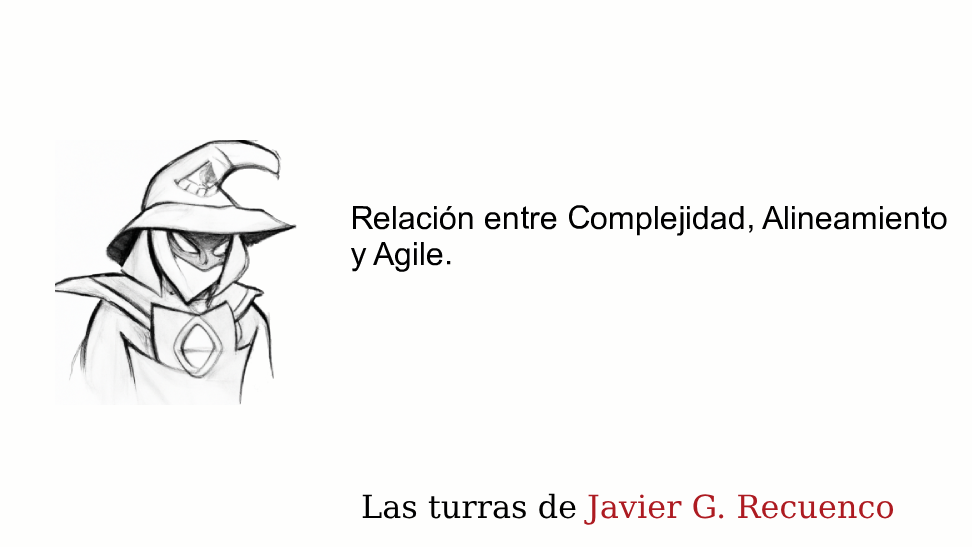
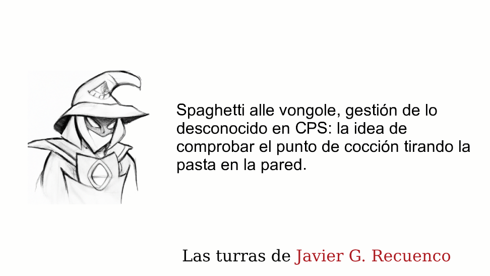
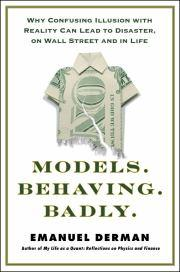
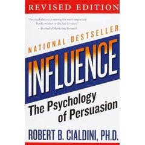
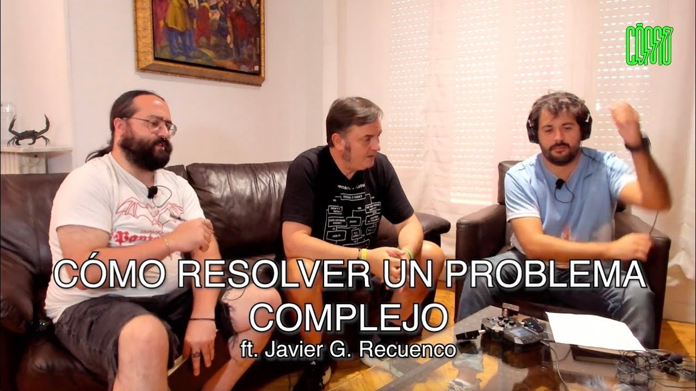
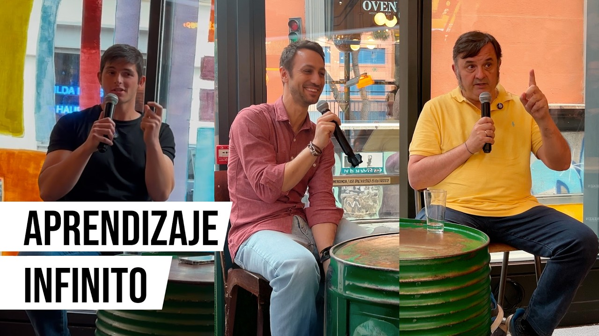

Módulo 01 / Apartado 5 de 5
Esto no va de tener una idea feliz
El último epígrafe del módulo pide distinguir el CPS del pensamiento creativo. Aquí es donde Recuenco se pone bruto, y donde más se aprende.
Empieza cabreado con Alejandro Magno
Ya conoces la historia del nudo gordiano aunque no sepas que la conoces. Había un nudo imposible de desatar en un templo de Frigia y una profecía que decía que quien lo desatara reinaría sobre Asia. Llegó Alejandro Magno, sacó la espada y lo cortó.
Se cita a todas horas como ejemplo de pensamiento lateral. A Recuenco le parece un disparate, y su argumento es difícil de rebatir: un tipo educado por Aristóteles pasa a la historia por un espadazo que podía haber dado cualquier descerebrado. Como demostración de inteligencia es bastante floja.
Es un término que acuñó Edward de Bono en 1967. La idea: cuando atacas un problema de frente, tu cabeza recorre los caminos que ya tiene hechos, y esos caminos te llevan a las soluciones de siempre. El pensamiento lateral consiste en entrar por un lado, provocando saltos que rompan ese surco.
Las técnicas típicas son cosas como coger una palabra al azar y forzarte a conectarla con tu problema, o invertir el enunciado a propósito. Suena a juego y en parte lo es, pero la intuición de fondo es buena: si repites el mismo camino mental, llegas al mismo sitio.
De Bono es también el autor de los seis sombreros para pensar, que veremos en el módulo 4.
El mapa: tres escuelas y dónde se coloca él
Para ordenar todo esto usa un eje muy sencillo, que además es el esqueleto del módulo 2 entero.
Su razón para ponerse del lado de la estrategia es puramente práctica y nada romántica: la genialidad no se puede invocar cuando te hace falta. Los momentos de «ajá» existen, son maravillosos y son rarísimos. Montar un método profesional sobre algo que aparece cuando le da la gana no es viable.
Rumelt por dentro, que es donde acaba yendo todo esto
Merece la pena abrir el extremo derecho del eje, porque es el sitio donde Recuenco se coloca y porque de aquí sale la frase que más se repite en todo el curso.
 El libro de esto
Good Strategy Bad Strategy
El libro de esto
Good Strategy Bad Strategy
Rumelt lleva media vida leyendo documentos titulados «Plan Estratégico» que no contienen ninguna estrategia, sino objetivos y una lista de cosas buenas que a la empresa le gustaría que pasaran. Para Recuenco es «hands down el mejor», y el primero que escribió que estrategia y resolución de problemas son la misma actividad. — Richard Rumelt, 2011
Dentro del diagnóstico está lo que llama el crux: el punto donde el esfuerzo se convierte en resultado. No el problema más grande, porque el más grande suele ser irresoluble, sino el más apalancado de los que sí puedes tocar. Es el cuello de botella de Goldratt dicho para estrategia.
Las cuatro señales de que te están vendiendo humo
La parte que más se usa, porque funciona como detector en una reunión.
- Palabrería
- Jerga que suena profunda y no dice nada. «Una banca centrada en el cliente». Rumelt da una prueba infalible: coge el documento y pregúntate si tu competidor podría publicarlo tal cual. Si le encajaría perfectamente, no tienes una estrategia, tienes relleno.
- No afrontar el problema
- El documento no nombra ninguna dificultad concreta. Si no hay obstáculo, no hay nada que superar y no hay estrategia.
- Objetivos disfrazados
- «Creceremos un 20%» dice a dónde quieres llegar, no cómo. Es una aspiración con una cifra puesta.
- Malos objetivos
- Listas de deseos que no atacan ningún obstáculo, normalmente porque cada departamento metió el suyo.
Y la prueba rápida, que te vale para cualquier plan que te pongan delante: si no descarta nada, no es una estrategia. Una política rectora funciona como los quitamiedos de una carretera, que no te dicen por dónde ir pero cierran caminos. Un plan donde caben todas las iniciativas de todo el mundo es un plan sin política rectora.
El límite. Rumelt escribe pensando en organizaciones con alguien que manda de verdad. Cuando el problema tiene varios dueños con intereses cruzados y nadie puede imponer una política rectora, el núcleo describe algo que no se puede construir. Para eso hará falta el CATWOE de Checkland, en el módulo 5.
La metadona del «ajá»
Aquí viene una de sus observaciones más finas, y va sobre por qué se toman tantas decisiones malas.
Resolver de verdad un problema difícil da un subidón considerable. Como el subidón es escaso y la necesidad es diaria, se ha extendido un sustituto: cerrar en falso el problema con una solución mala pero rápida. Da la mitad de satisfacción, pero cumple la función principal, que es quitarte de encima la sensación de que el problema te ha podido.
Para cada problema complejo hay una solución simple, clara y equivocada.
El palo al Design Thinking
Esto no está en el temario oficial y conviene tenerlo, aunque solo sea para saber qué opina el director del programa de una cosa que probablemente te han vendido en el trabajo.
Es un método de innovación que popularizaron la consultora IDEO y la escuela de diseño de Stanford a partir de los 2000. Consiste en cinco fases: empatizar con el usuario, definir el problema, generar muchas ideas, hacer un prototipo rápido y probarlo con gente.
Su virtud real es que obliga a mirar al usuario antes de construir, y en producto y servicios ha hecho mucho bien. Su versión degradada es la que todo el mundo conoce: una sala llena de pósits de colores, dos días de taller y un informe que no cambia nada.
Lo que dice él, con estas palabras: que el Design Thinking ha triunfado en sitios donde lo que hacía falta era estrategia de verdad, y que eso es como dar homeopatía y zumos de fruta contra el cáncer. El daño no está en el zumo. Está en que mientras te lo bebes no estás haciendo lo que tendrías que estar haciendo.
Es su explicación de por qué acaba pasando esto, y es más justa de lo que parece. Por cada persona que aplica un método en serio hay nueve haciendo una versión reducida que no reconoce sus límites.
El problema, dice, no es la disciplina: es que las disciplinas atractivas son un imán para eso. Le pasa igual a Agile, a Lean y a la psicología. Y de ahí saca la regla de andar por casa: si te dicen que una herramienta sirve para todo, desconfía de quien te lo dice, no de la herramienta.
El caso propio, que es el mejor del módulo
Cuenta que diseñaron un programa de fidelización para una empresa del Ibex 35. Doscientas diapositivas. Estaban orgullosísimos del trabajo.
No se implantó nunca. Y no por malo: porque el análisis dejaba escrito, negro sobre blanco, que en el escenario nuevo sobraban el 90% de las acciones que estaban en marcha y el 80% del personal que las hacía.
Nadie firma eso. Y en su momento, dice, no entendieron nada de lo que había pasado.
Lo que queda de todo el módulo
Si te olvidas de todo lo demás, quédate con esto, porque es la idea que más se repite en las 247 turras: la estrategia consiste en renunciar.
Diagnosticar bien es difícil, pero es la parte que se puede aprender. Lo que casi nadie hace es la siguiente: tirar lo que no sirve. Y mientras no se tira, se montan cosas para no tener que decidir.
Es como llama a las actividades que una organización mantiene porque hacen sentir que se está actuando, aunque no muevan nada: el comité que se reúne cada quincena, el plan a cinco años que se archiva, la migración tecnológica que no cambia la propuesta de valor.
Cuestan dinero y tiempo de gente buena. Y se sostienen porque cancelarlos obligaría a admitir que el problema está en otro sitio y que hay que renunciar a algo.
Lo que hay que llevarse de este apartado
- El chispazo creativo existe pero no se puede convocar. Por eso el método vive del lado de la estrategia.
- Tres escuelas en un eje: de Bono, Nardone y Rumelt. El módulo 2 va de eso.
- Cerrar en falso un problema alivia casi tanto como resolverlo. Ojo con eso.
- Cuando un método sirve para todo, el problema es quien lo vende.
- La estrategia consiste en renunciar. Todo lo demás son rituales.
Fuentes de este apartado
Las turras de las que sale
 Soluciones de mierda a problemas complejos43 tweets · dic 2020
Soluciones de mierda a problemas complejos43 tweets · dic 2020La turra clave de este apartado y una de las mejores del corpus. Empieza cabreado con el nudo gordiano, coloca a de Bono, Nardone y Rumelt en un eje, explica la metadona del momento «ajá», suelta el palo al Design Thinking y cierra con el caso del Ibex y con que la estrategia consiste en renunciar.

Complejidad, alineamiento y Agile42 tweets · dic 2020Por qué desconfía de Agile, Lean y Design Thinking, con una respuesta más justa de lo que parece: el problema no es la disciplina sino que atrae a mucho practicante flojo. Aquí define el efecto cuñado y explica por qué los ERP funcionaron y la mayoría de los CRM decepcionaron.

Espaguetis a la pared: la gestión de lo desconocido45 tweets · nov 2022Contra la fuerza bruta y el «muévete rápido y rompe cosas». Marca hasta dónde llega la experimentación legítima con una analogía criptográfica: probar a lo bruto solo funciona con contraseñas cortas. También propone el producto mínimo virtuoso frente al mínimo viable.
Los libros que se citan ahí dentro
Good Strategy Bad StrategyRichard Rumelt · 2011El libro del extremo derecho del eje, y para Recuenco «hands down el mejor» de estrategia. Propone que toda estrategia que valga tiene tres piezas: un diagnóstico honesto del problema, una política que decide por dónde atacar, y acciones que se refuerzan entre sí. Y lista las cuatro señales de que lo que te han vendido como estrategia es humo.

Models. Behaving. Badly.Emanuel Derman · 2011Escrito por un físico que se pasó a Wall Street y vio reventar los modelos desde dentro. Su distinción central: una teoría intenta describir cómo es el mundo, un modelo solo es una analogía útil, y confundir las dos cosas es lo que hunde bancos. Encaja con el «todos los modelos están equivocados» que Recuenco repite.
 Black Box ThinkingMatthew Syed · 2015
Black Box ThinkingMatthew Syed · 2015Compara dos sectores ante el error: la aviación, que investiga cada accidente y publica lo aprendido, y la sanidad, que durante décadas lo tapó. El título viene de la caja negra de los aviones. Es el libro de referencia sobre aprender de los fallos en lugar de esconderlos.

InfluenceRobert Cialdini · 1984El clásico de la persuasión, con sus seis principios: reciprocidad, compromiso y coherencia, prueba social, simpatía, autoridad y escasez. Está aquí porque una parte grande de este oficio consiste en que alguien acepte una idea incómoda, y eso no depende solo de que la idea sea buena.
Para ver

Cómo resolver un problema complejoCómo Podcast · charla en directoCharla con público y preguntas, de 2023. Es de las veces que mejor explica la diferencia entre atacar un problema y entenderlo, y tiene la ventaja de que la gente del público le hace las preguntas escépticas que uno tiene en la cabeza.

Aprendizaje infinitoKaizen #237 · con Sergio San JuanConversación a tres sobre cómo se aprende, el papel del sistema educativo y qué cambia con la IA. No va de metodología, va de la materia prima: cómo mantienes la cabeza en forma para poder hacer este trabajo.